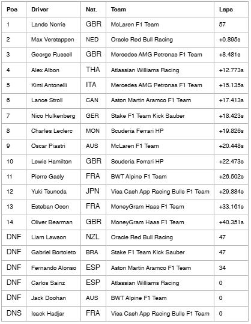

.jpeg)
Recap AUSTRALIAN GP 2025
Jakarta - Pebalap McLaren Lando Norris tampil sebagai juara seri pembuka F1 GP Australia 2025. Norris mengalahkan Max Verstappen (Red Bull Racing). Balapan yang berlangsung di Sirkuit Albert Park, Melbourne, Minggu (16/3/2025) siang WIB, berlangsung penuh drama. Hujan sempat mengguyur lintasan.

Safety car sempat keluar tiga kali di sepanjang balapan. Norris sendiri mampu bertahan dari tekanan Verstappen untuk finis pertama.
Pebalap Mercedes George Russell melengkapi podium dengan finis ketiga di belakang Verstappen.
Sementara itu, hasil mengecewakan diraih oleh Lewis Hamilton yang kini membela Ferrari. Debutnya dalam balapan bersama Tim Kuda Jingkrak berakhir di posisi ke-10. Sementara rekan setimnya, Charles Leclerc, finis di urutan kedelapan.
Hasil AUSTRALIAN GP 2025
Dari total 20 pebalap yang mengikuti balapan GP Australia 2025, hanya 14 yang berhasil finis. Enam pebalap lainnya gagal finis, termasuk Fernando Alonso dan Carlos Sainz.
Berikan Pendapat Anda